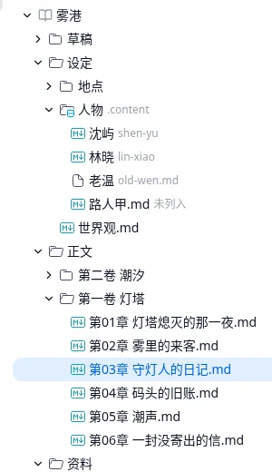
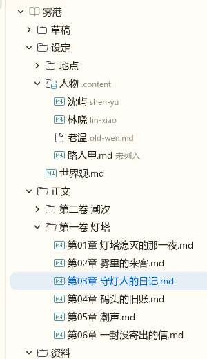
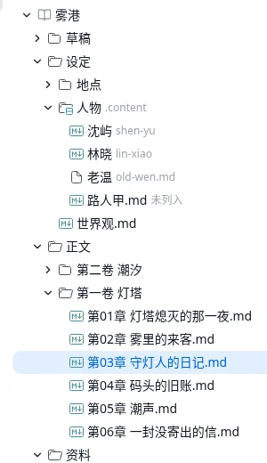
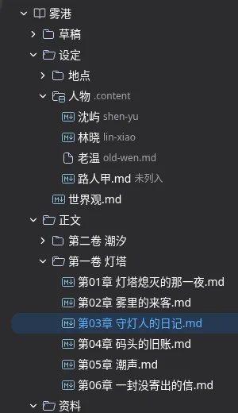
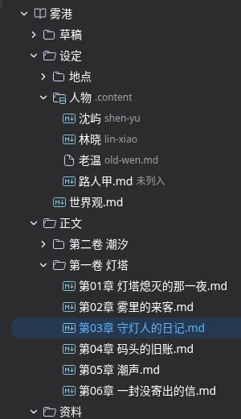
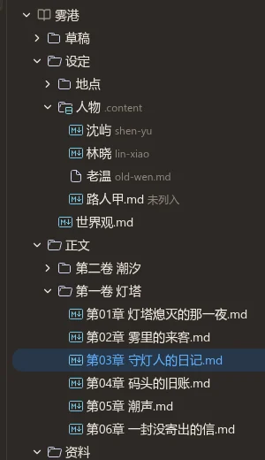
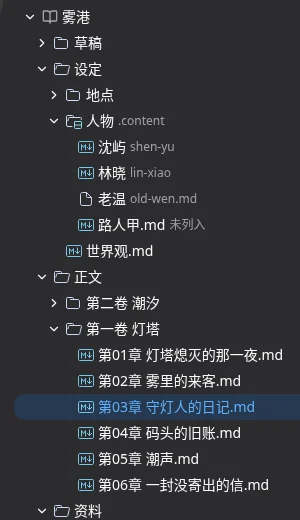
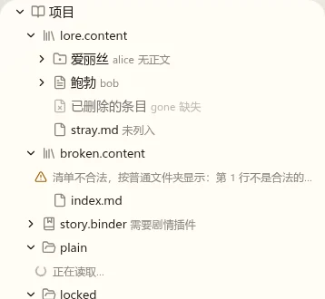
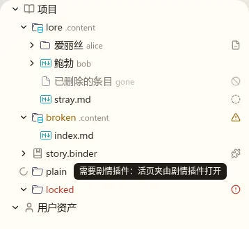

资源管理器打磨 · 第三轮：配色、状态图标与搜索
t86。第二轮的决定见页末“已定”。这一轮三件事：catppuccin 的几种配色放进两个主题 × 明暗里看；“需要剧情插件”这类短标记改成状态图标；搜索与过滤怎么分工。图仍是在开发服务的真实工作台（雾港）与 Lab 场景上注入样式截的，没有改源码。
待定亮色用哪种配色
catppuccin 给亮色的只有 Latte 一种；另做了一版把饱和度降到 60% 的“柔和”。每张图左上是 nbook 主题，右边是 macos 主题。
Latte 原色

Latte 柔和


推荐 Latte 原色：16px 的小图标颜色本来就占得少，降饱和后青色和绿色在暖白底上发灰。
待定暗色用哪种配色
catppuccin 的三种暗色：Frappé 最柔、Macchiato 居中、Mocha 最亮最饱和。上排 nbook 暗色，下排 macos 暗色。
Frappé

Macchiato

Mocha


推荐 Macchiato：在 nbook 偏暖的暗底上不刺眼，在 macos 的冷灰底上也够分得开。三种差别不大，如果你想以后让作者自己选，可以做成设置项（缺省 Macchiato），这次先不做。
待定短标记改成状态图标


| 标记 | 图标 | 备注 |
|---|---|---|
| 无正文 | 减号文件 | 内容节点还没有 index.md |
| 缺失 | 禁止符号 | 行仍淡化 |
| 未列入 | 虚线圆 | 文件在内容文件夹里但清单没登记 |
| 需要剧情插件 | 拼图 | 活页夹 |
| 剪切中 | 剪刀 | 行仍淡化 |
| 清单不合法、读取失败 | 警告、错误（第二轮已定） | 名字着色 |
一行有几个标记时并排放在行尾；副标题（真实名字，如 alice、gone）仍是文字。读屏读行的描述，里面带标记的文字。
待定搜索与过滤怎么分工
先更正第一轮的一句话：我当时说“快速打开已经能按名字找”，不对。新应用的快速输入现在只有命令面板（Ctrl+Shift+P）和跳到某行，没有按文件名的快速打开（Ctrl+P），也没有任何正文搜索（workbench/quick-open.md 把文件快速打开列为非目标）。所以现在新应用里找文件只能在树里一层层点开。
能做的有三样，常见的编辑器都是分开做的：
| 资源管理器的过滤框 | 快速打开 Ctrl+P | 搜索视图 | |
|---|---|---|---|
| 找什么 | 名字：把树收窄到命中项与它们的上级 | 名字：输入几个字跳到文件，不动树 | 正文：哪些章节里出现了这几个字，每处带上下文 |
| 结果在哪 | 树里 | 浮层里 | 活动栏的一个视图，按文件分组 |
| 要的后端 | 列出整个作品的名字（新接口；3000 个文件的量级一次就够） | 同左 | 服务端全文搜索；中文要考虑分词或直接逐字匹配，结果多时分批 |
| 大小 | 本 Task 能做 | 小，可以和过滤框共用名字列表 | 一块独立功能，值得单独设计 |
怎么分
A 三样分开：t86 只做过滤框（按名字）；快速打开与搜索视图各开一个 Task，各自先做一轮设计。
B 一个入口：过滤框输入后，树里既收窄名字命中的项，也在文件下面列出正文里命中的句子（像 Obsidian 的搜索），不另做搜索视图。
推荐 A：名字过滤每敲一个字都要即时，正文搜索要等服务端、结果可能上千条，两者放在一个框里，要么名字过滤被拖慢，要么正文结果挤爆树。你说的“专门的搜索视图”正好对应 A 的第三样。
过滤框匹配什么
拼音：输入 shenyu 或 sy 能找到“沈屿”。整个作品：没展开过的目录也算，需要上面说的新接口；不选就只过滤已经列出过的目录。
“不能像普通 IDE 那么简单”指哪些场景
例如：按人物名找到他出场的所有章节；按章节标题而不是文件名找；只在正文或只在设定里找；找某段时间写的；搜 Agent 会话。写下你常用的几种，搜索视图的设计从这里开始。
其它意见
已定第二轮
- 图标用 catppuccin 彩色（配色本轮定）。
- 状态挂在文件夹行上；短标记也做成状态图标（本轮看样子）。
- 两个根取 A：分节标题，仍是一棵树（像 JetBrains 的项目视图）。
- 过滤框固定在树上方；搜索再设计一轮（本轮）。
- 缩进参考线缺省悬停时显示；隐藏
.md缺省关闭。 - 右键菜单照候选改。
- 拖动：拖到文件上或两行之间移入那个文件所在的文件夹、拖到空白移到项目根、停留自动展开、边缘自动滚动、拖影与源行淡化、拖到编辑区打开，都改；从系统拖文件进来另开 t87。
已定第一轮
- 缩进参考线、隐藏
.md：可选、可配置。 - 普通文件夹按中文数字与阿拉伯数字的数值排序。
- 只有正文的节点不可展开；内容文件夹去后缀、换图标。
- 标题动作不改；章节字数先不做。